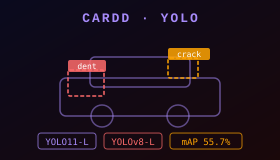
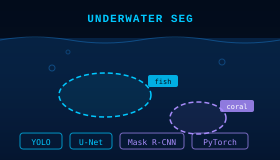
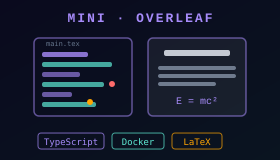
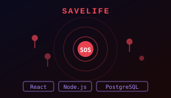
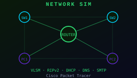
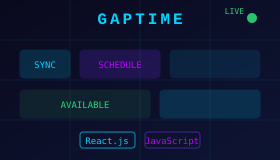
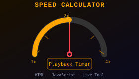
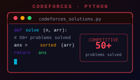
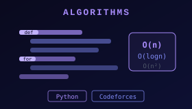

Dhaka, Bangladesh
Aditi Roy Adri
Machine Learning & Computer Vision
I build things that think, render, and connect.

About
I'm Adri.
I don't stay in one lane. I've written systems-level code, built games from scratch, shipped full web applications, and trained deep learning models — not to collect skills, but because I want to understand how things actually work under the hood, not just how to use them. The hardest part of a problem is usually the part I find most interesting.
Right now my focus is computer vision — object detection, segmentation, classification, models like YOLO, U-Net, and Mask R-CNN — and I'm building toward a research career in the field.
Outside of that, I'm solving problems on Codeforces, singing or on my fourth coffee of the day.
I finish what I start. Every project here works — not just compiles.
20+Projects Built
500+CF Solutions
Education
2023 — 2026
B.Sc. in Computer Science & Engineering
BRAC University · Dhaka, Bangladesh
Coursework spans algorithms, operating systems, computer graphics (OpenGL), machine learning, computer networks, digital logic design, and microprocessor systems.
AlgorithmsMachine Learning
Computer GraphicsOperating Systems
Computer NetworksMicroprocessors
Digital Logic
Skills
Languages
PythonC++C
JavaJavaScriptPHP
Assembly (EMU8086)
Web & Frameworks
ReactNode.jsExpress
HTML/CSSMySQLPostgreSQLMongoDB
ML & Computer Vision
PyTorchYOLOMask R-CNN
U-NetDeep LearningCNNs
Image SegmentationObject DetectionTransfer Learning
NumPyPandasMatplotlibSciPy
Graphics & Tools
OpenGLGitGitHub
LaTeXCisco Packet Tracer
Research Interests
My core interest is computer vision and image processing — building systems that can see and make sense of images. Across my work I've trained and benchmarked deep-learning models for detection, segmentation, and classification, and I'm building toward a research career in this field.
Image Segmentation
Semantic and instance segmentation for pixel-level scene understanding — U-Net, Attention U-Net, and Mask R-CNN with pretrained encoder backbones and ablation studies.
U-NetMask R-CNNResNet
Object Detection
Real-time detection and localization with the YOLO family — training on custom datasets and comparing model versions on detection metrics such as mAP.
YOLOv8YOLO11mAP
Image Classification
CNN-based recognition and fine-grained classification — using transfer learning and pretrained backbones to reach strong accuracy from limited data.
CNNsTransfer Learning
Deep Learning & Benchmarking
Designing, training, and rigorously evaluating deep models in PyTorch — comparing architectures and quantifying trade-offs with clear, reproducible metrics.
PyTorchModel Evaluation
Projects















Certificates
Contact
Open to opportunities, collaborations, and interesting conversations. Drop me a line anytime.
aditiroyadri121@gmail.comor find me on